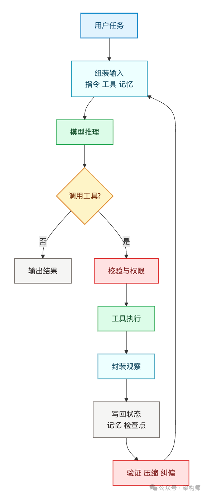
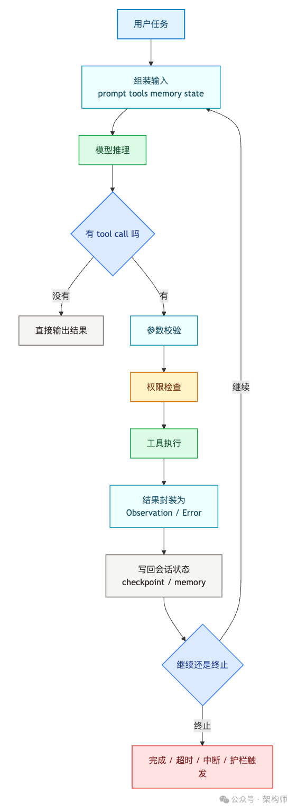
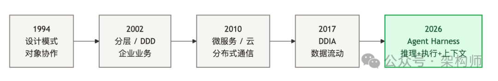
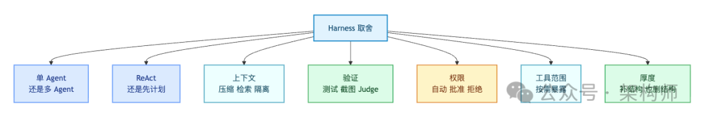
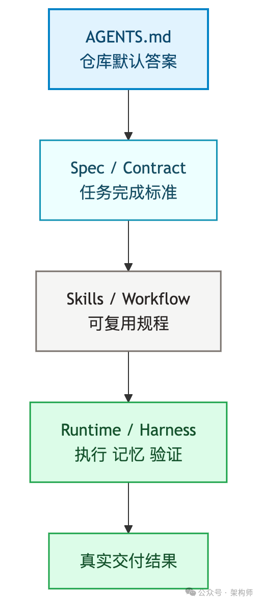

Harness 到底是什么：六层承重结构 + 7步循环 + 软件工程复杂性迁移
来源：微信公众号 归档日期：2026-04-27 抓取状态：成功 原文字符：12543｜配图：6 张
摘要速览
Harness 这个词最近到处出现但越讲越糊——有人说是工具系统，有人说是 Prompt 外面那层壳，有人说是 Memory/Sandbox/Hooks/Skills 的总和。这些都沾边但都没落到主要承重的地方。
这张卡给出 Harness 的教科书式地图：它到底由哪几层承重结构组成、一次循环到底发生了什么、为什么 2026 年才集中讨论、跟软件工程三十年演进是什么关系。
核心内容
1. Prompt / Context / Harness 三层包含关系
- Prompt Engineering 解决「怎么对模型说」
- Context Engineering 解决「让模型在这一轮看到什么」
- Harness Engineering 解决「整套系统怎么运行、怎么持久化、怎么验证、怎么兜底」
类比（Beren Millidge 2023）：裸 LLM = 没有 RAM/磁盘/IO 的 CPU，上下文窗口是内存，外部数据库是磁盘，工具集是设备驱动，Harness 就是让这台机器持续跑起来的操作系统。
Harness 回答的是一个工程问题：怎样把一个无状态、会推理的模型，变成一个能持续交付结果的系统。
2. Harness 六层承重结构（把 12 组件压成主链路）
| 层 | 核心职责 | 常见坑 |
|---|---|---|
| ① 主循环 | while loop：组装输入→调用模型→解析输出→执行工具→回写→再来一轮 | 无限转圈 / 提前收尾 / 误把中间结果当最终结果 |
| ② 工具系统 | 注册 / 参数校验 / 执行环境隔离 / 结果包装成 Observation | 同样支持 tool calling 跑出来体验差很多；关键在失败恢复 |
| ③ 上下文与记忆 | 该记什么、何时记、何时删；短期 vs 长期 | 把记忆当真相→幻觉放大；应当作线索再回真实环境确认 |
| ④ 状态与检查点 | 知道做到哪、失败从哪恢复、哪些中间产物保留 | 没 checkpoint，长任务每次都是从头赌 |
| ⑤ 权限 / 错误 / 安全护栏 | 把"模型想做什么"和"系统允许做什么"拆开 | 无权限的能干 Agent = 事故放大器 |
| ⑥ 验证与纠偏 | 外部反馈回路：测试、lint、类型检查、截图、端到端、评估器 | Boris Cherny：给模型验证自己工作的方式，质量提升 2–3 倍 |
Claude Code 的工具分六类（文件/搜索/执行/Web/代码智能/子 Agent 派生）；长期记忆三层（150 字符轻量索引 + 按需拉详细主题文件 + 只能搜索访问的会话记录）。
3. 一次完整循环 7 步（执行视角）
- 组装输入 — system prompt + 工具定义 + 记忆 + 会话状态 + 当前任务拼成这一轮实际上下文
- 模型推理 — 直接回答还是先调工具
- 分类输出 — 文本无 tool call 可能结束；有 tool call 进入执行阶段
- 执行工具 — 参数校验 → 权限检查 → 并发读/串行改/拒绝
- 回写结果 — 工具输出包装成 Observation；失败不静默吞掉，回成明确错误
- 更新状态 — 会话历史、检查点、工作记忆、压缩触发条件
- 决定是否继续 — 完成 / 预算用尽 / 达到最大轮数 / 用户中断 / 安全护栏触发
循环本身往往很朴素，复杂的是每一步背后的工程取舍。有循环 ≠ 有 Harness。
4. 为什么 2026 年都在讲 Harness（两个关键信号）
- 同一模型换 Harness 结果差一个量级：LangChain 只换外围基础设施，从 TerminalBench 2.0 前 30 名外拉到第 5；有研究项目把"优化 Harness"本身作为搜索对象，拿到 76.4% 通过率
- 长任务误差指数累积：10 步流程，每步 99%，整体只剩约 90%；任务再长误差快速堆积
模型能力到位后，瓶颈从"能不能答"转向"能不能稳定交付"。2024 卷 Prompt，2025 补 Context，2026 收到 Harness。
关键数据点：
- Vercel 在 v0 上删掉 80% 工具，表现反而更好
- Claude Code 靠懒加载实现 95% 上下文缩减
- Manus 半年内重建 5 次，每次都在做减法
Harness 设计的重心在精简。
5. 模型与 Harness 协同演化（容易被忽略）
Claude Code 的模型在训练阶段就把特定 Harness 放进了训练回路，换一套工具实现反而可能让表现下降。反过来：怎么设计 Harness，也在影响模型该往哪个方向训。
6. 软件工程复杂性迁移视角
| 时代 | 解决的复杂性 |
|---|---|
| 设计模式 | 对象协作 |
| 分层架构 / DDD | 企业业务和系统边界 |
| 微服务 / 云 | 分布式通信和运维 |
| Harness | 会推理、会执行、会持续消耗上下文预算的系统复杂性 |
软件工程过去 30 年反复在做同一件事：把复杂系统变成可控系统。Harness 不是新名词，是复杂性继续外溢之后，软件工程在 Agent 时代长出来的新接口。
7. 五组设计取舍（没有放之四海而皆准答案）
- 单 vs 多 Agent：先把单 Agent 做通，再拆明显超载的职责；多 Agent 不是白拿收益
- ReAct vs Plan-and-Execute：任务越长/代价越高/回滚越麻烦，越值得把计划层显式拿出来
- 上下文管理：关注信号密度而非窗口大小；哪些常驻、哪些检索、哪些折叠、哪些进长期记忆
- 验证交给谁：生成器自验最容易放过自己；碰到代码/页面/部署/数据写入都该补外部验证
- Harness 多厚：太薄靠模型自觉，太厚笨重昂贵且与模型强绑定；原则是一边补承重结构，一边等模型进步后删掉不再承重的部分
8. 从最小可用开始搭（6 条落地原则）
- 单 Agent 主链路先做稳：工具稳定调用、结果正确回写、失败不静默、结束条件明确
- 工具数量收紧：>10 个且职责重叠时调用质量明显下降；只暴露当前步骤最小工具集
- 记忆是提示不是事实：关键动作前回到真实文件和真实环境二次确认
- 验证尽早外移：能写测试别只写总结，能跑页面别只看文字描述
- 状态和恢复点显式写下来：假设任务必然会中途被打断，有 checkpoint 是恢复问题，没 checkpoint 是运气问题
- 高风险动作从"能力"里拆出来：删除/外发/部署/联网写入/批量修改不该默认和读操作一样
9. AGENTS.md / Spec / Skills 也是 Harness 的一部分
很多人以为 Harness 只是 Runtime，其实不是。这三层解决同一个问题：尽量缩小"必须靠模型临场发挥"的面积。
- AGENTS.md = 仓库默认答案：怎么读、哪些规则先于任务、哪些是标准入口、改什么联动什么检查
- Spec = 任务完成标准：这次交付什么、边界、什么叫做完、验收条件
- Skills = 可复用操作规程：这类问题以后怎么做、高频稳定步骤、值得复用的检查和脚手架
把它们和 Runtime 放在一起，是在做同一件事：
- 把知识从聊天记录里搬出来
- 把规则从 review 口头提醒里搬出来
- 把经验从资深工程师脑子里搬出来
- 把验证从"我觉得差不多"搬到系统动作里
10. 灵魂一句话
如果你不是模型，你就在做 Harness。
把注意力从"怎么把模型哄好"拉回到"怎么把系统搭对"。Harness 可能会变薄，但不会变得不重要。当一个 Agent 又开始跑偏，先看一眼 Harness——很多问题就藏在那一层。
可执行启发
（待补充）
我的想法
（待补充）
思考方向：
- 你的工作台分层（L0→L1→L2→L3）对照 Harness 六层——主循环在哪一层？工具系统在哪一层？权限护栏现在是 feedback_prefix_routing 这种 memory 规则顶住的，要不要显式沉淀到 settings.json 的 hooks？
- 哪些 Skill 是"不再承重"可以删的？ 比如 Harness 变薄的视角重新审视 ai-super-individual/.claude/skills/ 下每个 skill 的 SKILL.md，有没有模型升级后已经不需要的脚手架？
为什么有用
这张卡直接对齐你在做的 ai-super-individual 体系：
- Super-ALL → chairman → 项目级 Agent → 子 Agent 的分层调度 = 主循环层；你的 skill-registry + project-agents.md + 各 Skill 的 SKILL.md = AGENTS.md / Skills 层；
04-项目/里的 roadmap.md 和各项目 AGENTS.md = Spec 层。文章直接验证了你的架构：Harness 不只是 Runtime，团队经验外移成工件那层才是真正吃力的地方 - "Harness 一边补承重一边删不再承重部分" 给了工作台体系演进的指导原则——你的 work-bridge / input-ops 等 skill 已经很多，哪些是当前必需的承重、哪些是等模型升级后就可以删掉的脚手架，需要持续审视（索引里已经有一张"Everything CC 生产级配置集合"和"Superpowers 深度指南"讲的是 Skill 多了怎么治理，现在有了第一性原理的判断标准）
- 10 步×99%=90% 是向非技术协作者解释"为什么长任务 Agent 需要 checkpoint 和验证"的最好一句话
- 对比消化：索引里已经有 Claude Code 六大系统拆解（20260421）、Managed Agents 三层虚拟化（20260409）、腾讯 LEGO 五层架构（20260421）、驾驭工程第三范式（20260407），本文的六层承重结构是最接近 Akshay 原文的通用地图——四张卡可以联动阅读：本卡 = 概念地图，Claude Code 源码卡 = 一个具体实现，Managed Agents = 未来演进方向，腾讯 LEGO = 工业落地案例
适用 / 不适用场景
- 适用：新成员入门 Agent 工程学、review 自己 Agent 系统时做 checklist、和非技术同事解释"为什么同一个模型不同产品体感差这么多"、搭建新项目级 Agent 时做设计取舍
- 不适用：具体代码实现（本文是概念地图，不是源码解读，看 20260421 的 Claude Code 51 万行拆解卡或 Agent = Model + Harness 六大系统卡）、模型层优化（本文明确不讨论模型权重）
原文：公众号·架构师 若飞
最近多看几篇 Agent 文章，就会反复遇到同一个词：Harness。
但这个词越讲越糊。
有人把它理解成工具系统。有人把它理解成 Prompt 外面那层壳。也有人把它理解成多 Agent 编排、Memory、Sandbox、Hooks、Skills 这些东西的总和。
这些说法都沾边，但都还没有落到主要承重的地方。
这两天反复读 Akshay 写的 The Anatomy of an Agent Harness ，最有启发的地方，不是又盘了一遍产品名单，而是它把视角从"模型有多强"挪到了"模型外面那套系统到底在干什么"。
原文信息量很大，也铺得很开。我们不做逐段翻译，有兴趣可以直接看原文。我们换另外一个角度来看：
同一个模型，为什么做出来的 Agent 会差这么远。
我自己的理解是：Harness 是在模型和真实交付之间，补上一套可运行、可恢复、可验证、可治理的软件系统。
把这个问题想清楚以后，Harness 不再像一个什么都能往里装的热词了。
太长不看版
- Harness 是包住模型的整套运行系统：主循环、工具、上下文、状态、权限与错误、验证。
- Prompt 管怎么表达任务，Context 管模型看到什么，Harness 管系统怎么跑、怎么停、怎么纠偏。
- 2026 年大家都在讲 Harness，因为模型能力上来之后，瓶颈从"能不能答"转向"能不能稳定交付"。
- 同一个模型，只换 Harness，不换权重，结果可能差出一个量级。LangChain 只换外围基础设施，就从 TerminalBench 2.0 前 30 名外拉到第 5。
- 模型和 Harness 是协同演化的。Claude Code 的模型在训练阶段就把特定 Harness 放进了训练回路。
- Harness 的演进方向是变薄，Manus 半年内重建五次，每次都在做减法。但 Harness 不会消失。
- 如果一个 Agent 还不稳定，值得先检查的，通常是 Harness。
Harness 不只是一层壳
我们先把三个词分开看。
- Prompt Engineering：解决的是"怎么对模型说"。
- Context Engineering：解决的是"让模型在这一轮看到什么"。
- Harness Engineering：解决的是"整套系统怎么运行，怎么持久化，怎么验证，怎么兜底"。
这三层是包含关系。
Prompt 更像指令。Context 更像喂给模型的工作台。Harness 更像操作系统。Akshay 引用了 Beren Millidge 2023 年的类比：裸的 LLM 是一颗没有 RAM、没有磁盘、没有 I/O 的 CPU。上下文窗口充当内存，外部数据库充当磁盘，工具集充当设备驱动。让这台机器持续跑起来的，是外面这套调度、执行、校验和保护机制。
Harness 回答的是一个工程问题：怎样把一个无状态、会推理的模型，变成一个能持续交付结果的系统。
聊天模型一旦进入真实任务场景，体验有时会突然掉下去。Demo 阶段它看起来会思考、会调用几个工具，已经很像回事。可一旦任务拉长，另一面就会暴露出来：它会忘记自己三步前做过什么，工具报错后若无其事地往下走，上下文越堆越脏，最后产出一个"看着像完成了，其实没法交付"的结果。
很多时候问题出在包着模型跑的那套系统。
一条主链路看懂 Harness
Akshay 生产级 Harness 拆成了 12 个组件。我们把它们压成 6 个核心结构。
1. 主循环 — 这是 Harness 的心脏。表面上看，它经常只是一个 while loop：组装输入，调用模型，解析输出，执行工具，把结果塞回去，再来一轮。但难点在循环里每一步到底由谁控制、何时终止、出错后怎么回来。很多人第一次做 Agent，会把注意力放在"模型有没有想明白"。上线以后，最先暴露的反而是循环失控：无限转圈、提前收尾、误把中间结果当最终结果。
2. 工具系统 — 工具是 Agent 的手。但工具系统不只是"给几个函数名"这么简单。它至少还要管四件事：工具如何注册、参数如何校验、执行环境是否隔离、结果如何回写成模型能继续理解的 Observation。Akshay 举了一个对照：Claude Code 把工具分成六类（文件操作、搜索、执行、Web 访问、代码智能、子 Agent 派生），OpenAI Agents SDK 支持函数工具、托管工具和 MCP 工具。分类方法不同，但要解决的问题一样。所以，同样都支持 tool calling，跑出来的体验也会差很多。模型知道可以调用什么工具，只是起点。它能不能在合适的时候调用、带着正确参数调用、在失败后继续恢复，才是 Harness 的事情。
3. 上下文与记忆 — 这层解决的问题很具体：该记什么、什么时候记、什么时候删。短期记忆是当前会话历史。长期记忆是跨会话持久化的事实、决策和索引。Claude Code 的做法是三层：一个始终加载的轻量索引（每条约 150 字符），按需拉取的详细主题文件，以及只通过搜索访问的原始会话记录。成熟系统不会把记忆当真相，而是把它当线索。先靠记忆提示方向，再回到真实文件、真实环境和真实状态里确认。记忆如果不能被验证，就很容易从"帮助检索"滑向"帮助幻觉"。
4. 状态与检查点 — 任务一旦变长，状态管理就从"有最好"变成"没有不行"。系统需要知道当前做到哪一步，失败后从哪恢复，哪些中间产物值得保留，哪些只是临时噪音。有的系统用结构化状态对象做 checkpoint，有的系统把 git commit、进度文件、任务日志一起当作恢复点。实现可以不同，但目的只有一个：让长任务可以继续，而不是每次都从头赌一遍。
5. 权限、错误与安全护栏 — 这层常被低估，但分量不小。一个看起来很能干的 Agent，如果没有权限控制，本质上只是一个事故放大器。稳一点的 Harness 会把"模型想做什么"和"系统允许做什么"拆开。模型负责提出动作。工具系统负责决定这个动作能不能做、要不要用户确认、失败后是重试、回传错误、还是直接终止。生产环境里的 Agent，高风险动作必须有边界。
6. 验证与纠偏 — 这层才是 Demo 和生产的分水岭。工具给了模型行动能力。验证才给了模型纠错能力。更稳的做法，是给模型一个外部反馈回路：测试、lint、类型检查、页面截图、端到端操作，甚至另一个专门负责挑刺的评估器。Claude Code 的创始人 Boris Cherny 提到，给模型一种能验证自己工作的方式，质量提升 2 到 3 倍。没有验证，Harness 很容易变成"更快地产出错结果"。
再把这条链跑一遍：一次完整循环到底发生了什么
一套成熟的 Harness，至少要把这七步串起来：
- 组装输入。 把 system prompt、工具定义、记忆、会话状态、当前任务拼成这一轮实际给模型看的上下文。
- 模型推理。 模型决定这轮是直接回答，还是先调工具。
- 分类输出。 如果只有文本没有 tool call，这一轮可能就该结束；如果有工具调用，就进入执行阶段。
- 执行工具。 先做参数校验，再做权限检查，再决定这一步是并发读、串行改，还是直接拒绝。
- 回写结果。 工具输出要重新包装成模型能继续理解的 Observation；失败也不能静默吞掉，而要回成一个明确错误。
- 更新状态。 会话历史、检查点、工作记忆、压缩触发条件，都在这里更新。
- 决定是否继续。 要么回到下一轮，要么因为任务完成、预算用尽、达到最大轮数、用户中断或安全护栏触发而终止。
循环本身往往很朴素。复杂的是每一步背后的工程取舍。很多人第一次做 Agent 时会困惑：循环有了，怎么还是不稳？多数时候，有循环不等于有 Harness。
为什么 2026 年突然都在讲 Harness
这个词并不是今年才出现的，只是今年开始被越来越正式地说出来了。
模型已经强到，很多团队第一次认真感受到：能力不再是唯一瓶颈，稳定交付开始变成更大的瓶颈。
Akshay 提到两个很有代表性的信号。
第一个信号是，同一个模型、同一组权重，只换外面的系统层，表现就可能大幅跳跃。比如 LangChain 只换外围基础设施，就能把名次从 TerminalBench 2.0 的前 30 名之外拉到第 5。还有研究项目把"优化 Harness"本身变成了搜索对象，最终拿到了 76.4% 的通过率。
这里要留一个边界：榜单结果不能直接等同于真实产品体验，单个实验也不能替所有场景下结论。但它至少说明一件事：Agent 的表现并不只由模型上限决定，还强烈依赖它跑在什么样的系统里。
第二个信号是，长任务的误差会快速累积。一个 10 步流程，如果每一步成功率都是 99%，最终全链路成功率也只有大约 90%。任务再拉长一点，误差就会开始明显堆积。
所以最近越来越多人开始把 Harness 叫成"战略资产"。Vercel 在 v0 上删掉了 80% 的工具，表现反而更好。Claude Code 靠懒加载实现了 95% 的上下文缩减。这些数字说的是同一件事：Harness 设计的重心在精简。
因为到了这个阶段，它在直接决定 Agent 能不能被稳定交付、能不能被团队持续复用。
回头看，2024 年大家还在卷 Prompt，2025 年开始补 Context，到了 2026 年，讨论慢慢收到了 Harness。
因为把系统拉垮的，越来越是这些更工程的问题：
- 上下文会不会逐轮变脏。
- 工具失败后有没有显式反馈。
- 状态能不能跨会话延续。
- 高风险动作有没有权限边界。
- 结果到底由谁验收。
模型智力在线之后，大家开始重新面对软件工程。
只不过这次面对的，是一个会推理、会调用工具、还会不断消耗上下文预算的新型系统。
原文里有一个容易被忽略的观点：模型和 Harness 是协同演化的。Claude Code 的模型在训练阶段就把特定的 Harness 放进了训练回路，换一套工具实现，反而可能让表现下降。换个角度看，怎么设计 Harness，反过来也在影响模型该往哪个方向训。
从设计模式到 Harness，问题其实没变
如果只盯着 2026 年的几个产品，很容易把 Harness 看成一个新名词。但把时间拉长一点，它更像软件工程演进里很自然的一步。
- 设计模式，解决的是对象协作的复杂性
- 分层架构和 DDD，解决的是企业业务和系统边界的复杂性
- 微服务和云，解决的是分布式通信和运维的复杂性
- 到了今天，Harness 解决的，是一个会推理、会执行、还会不断消耗上下文预算的系统复杂性
对象一直在变。但问题其实没怎么变。软件工程过去 30 年反复在做的，都是同一件事：把复杂系统变成可控系统。
所以 Harness 让工程师觉得熟悉，不是巧合。有点是旧瓶装新酒的感觉。它是复杂性继续外溢之后，软件工程在 Agent 时代长出来的新接口。从这个角度看，Harness 有价值的地方，也不只是它让模型更能干。它让系统重新变得可设计、可治理、可拆边界。
难点在取舍，不在堆组件
Akshay 后面讲到设计取舍那段，我反复看了几遍。Harness 确实更像一组持续要做的架构取舍，没有标准答案。
单 Agent 还是多 Agent — 一个常见误区，是一上来就上多 Agent。但多 Agent 从来不是白拿的收益。它会带来额外路由开销、上下文损失、角色边界设计和更多失败点。更稳的顺序通常是：先把单 Agent 做通，再把明显超载的职责拆出去。
ReAct 还是 Plan-and-Execute — ReAct 的优点是灵活，边想边做。Plan-and-Execute 的优点是稳定，先把路线摊开，再逐段执行。前者更像即兴驾驶。后者更像先画施工图再开工。任务越长、代价越高、回滚越麻烦，越值得把计划层显式拿出来。
上下文到底怎么管 — 很多团队做 Context Management 时，默认思路是"窗口大一点就好了"。但窗口变大，不代表中间位置的信息就更容易被利用。成熟系统关心的是信号密度：哪些信息必须常驻，哪些信息只在需要时检索，哪些旧 Observation 应该折叠，哪些总结必须进入长期记忆。
验证交给谁 — 让生成器自己验自己，速度很快。问题是它通常也最容易放过自己。所以只要任务一旦碰到代码、页面、部署、数据写入这些"能真测"的地方，外部验证几乎都是值得补上的。
Harness 到底要多厚 — Harness 太薄，很多稳定性问题只能靠模型自觉。Harness 太厚，系统会变得笨重、昂贵，而且和当前模型强绑定，模型一升级，很多脚手架可能反而成了负担。所以好的 Harness 要一边补承重结构，一边等待模型进步后再把不再承重的部分删掉。 Akshay 提到，Manus 半年内重建了五次，每次重写都在做减法。
从最小可用开始搭
如果今天从零开始搭，我觉得更稳的方式是先把几件关键的事做好。
单 Agent 主链路先做稳 — 先让一条最短链路跑通：用户任务进入后，模型能稳定决定何时调用工具，工具结果能正确回写，出现失败时不会默默跳过，任务结束条件明确。没有这条主链路，后面加再多记忆、子代理和编排，都不太稳。
工具数量收紧 — 工具不是越多越好。工具一多，模型的选择成本、误调用概率和上下文负担都会一起上升。Akshay 提到，当工具数超过 10 个且职责重叠时，模型的调用质量会明显下降。如果不是明确必要，更稳的做法是只暴露当前步骤会用到的最小工具集。
记忆是提示，不是事实 — 长期记忆要有，但不要让它越权。它适合先做索引、摘要和决策记录。关键动作之前，系统仍然要回到真实文件和真实环境里做二次确认。
验证尽早外移 — 能写测试就别只写总结。能跑页面就别只看文字描述。能让 lint、类型检查、截图或真实 API 响应说话，就别只让模型自己评价"应该没问题"。
状态和恢复点要显式写下来 — 长任务一定会失败。所以系统设计时，不该先假设它不会失败，而该先假设它必然会在中途被打断、跑偏、超时或遇到工具异常。有检查点，失败是恢复问题。没检查点，失败就会重新变成运气问题。
高风险动作要从"能力"里拆出来 — 删除、外发、部署、联网写入、批量修改，这些动作都不该默认和普通读操作一样。模型可以提出动作。系统必须决定边界。这一步看起来保守，实际上是在给整个 Harness 留出能上线的空间。
AGENTS.md、Spec、Skills 也是 Harness 的一部分
这段时间写下来，有一个观察越来越清晰：很多人以为 Harness 只是 Runtime，其实不是。Harness 真正吃力的地方，往往是那些把团队经验外移成工件的层。
我越来越觉得 AGENTS.md、Spec、Skills 不只是"辅助材料"。它们解决的是同一个问题：尽量缩小"必须靠模型临场发挥"的面积。
AGENTS.md 管的是仓库默认答案 — 这个仓库怎么读、哪些规则先于当前任务、哪些入口才是标准入口、改哪些东西必须联动哪些检查。它把团队在仓库层面的默认规则，先写出来。
Spec 管的是任务完成标准 — 这次到底要交付什么、哪些边界不能越、什么叫"做完了"、哪些验收条件必须先对齐。它是任务层的上下文管理层。
Skills 管的是可复用操作规程 — 这类问题以后通常怎么做、哪些步骤是高频而稳定的、哪些检查和脚手架值得复用、哪些经验不该每次都重新口头讲一遍。
如果说 AGENTS.md 更像仓库地图，Spec 更像本轮任务契约，那 Skills 更像团队沉淀下来的程序性记忆。把这三层和 Runtime 放在一起看，它们合起来在做同一件事：
- 把知识从聊天记录里搬出来
- 把规则从 review 口头提醒里搬出来
- 把经验从某个资深工程师脑子里搬出来
- 把验证从"我觉得差不多"搬到系统动作里
回到系统层
原文里有一句话我很喜欢，大意是：如果你不是模型，你就在做 Harness。
这句话的分量，其实比看上去大很多。因为它把注意力从"怎么把模型哄好"重新拉回到了"怎么把系统搭对"。
Agent 当然在进步。模型也还会继续变强。但只要系统还需要上下文管理、工具执行、状态持久化、错误恢复、权限控制和外部验证，Harness 就不会消失。
它可能会变薄。它不会变得不重要。当一个 Agent 又开始跑偏，我现在的习惯是先看一眼 Harness。很多问题，其实就藏在那一层。
参考资料
- Akshay，The Anatomy of an Agent Harness，原文：<https://x.com/akshay_pachaar/status/2041146899319971922>
原文沉淀
目录
- 太长不看版
- Harness 不只是一层壳
- 一条主链路看懂 Harness
- 1. 主循环
- 2. 工具系统
- 3. 上下文与记忆
- 4. 状态与检查点
- 5. 权限、错误与安全护栏
- 6. 验证与纠偏
- 再把这条链跑一遍：一次完整循环到底发生了什么
- 为什么 2026 年突然都在讲 Harness
- 2026 年这几条线，指向同一层
- 从设计模式到 Harness，问题其实没变
- 难点在取舍，不在堆组件
- 单 Agent 还是多 Agent
- ReAct 还是 Plan-and-Execute
- 上下文到底怎么管
- 验证交给谁
- Harness 到底要多厚
- 从最小可用开始搭
- 单 Agent 主链路先做稳
- 工具数量收紧
- 记忆是提示，不是事实
- 验证尽早外移
- 状态和恢复点要显式写下来
- 高风险动作要从“能力”里拆出来
- AGENTS.md、Spec、Skills 也是 Harness 的一部分
- AGENTS.md 管的是仓库默认答案
- Spec 管的是任务完成标准
- Skills 管的是可复用操作规程
- 回到系统层
- 参考资料
- 因公众号更改推送规则，请点“在看”并加“星标”第一时间获取精彩技术分享
- ·END·
- 架构师
架构师（JiaGouX）
我们都是架构师！ 架构未来，你来不来？
最近多看几篇 Agent 文章，就会反复遇到同一个词：Harness。
但这个词越讲越糊。
有人把它理解成工具系统。有人把它理解成 Prompt 外面那层壳。也有人把它理解成多 Agent 编排、Memory、Sandbox、Hooks、Skills 这些东西的总和。
这些说法都沾边，但都还没有落到主要承重的地方。
这两天反复读 Akshay 写的 The Anatomy of an Agent Harness，最有启发的地方，不是又盘了一遍产品名单，而是它把视角从“模型有多强”挪到了“模型外面那套系统到底在干什么”。
原文信息量很大，也铺得很开。我们不做逐段翻译，有兴趣可以直接看原文。我们换另外一个角度来看：
同一个模型，为什么做出来的 Agent 会差这么远。
我自己的理解是：Harness 是在模型和真实交付之间，补上一套可运行、可恢复、可验证、可治理的软件系统。
把这个问题想清楚以后，Harness 不再像一个什么都能往里装的热词了。
太长不看版
- • Harness 是包住模型的整套运行系统：主循环、工具、上下文、状态、权限与错误、验证。
- • Prompt 管怎么表达任务，Context 管模型看到什么，Harness 管系统怎么跑、怎么停、怎么纠偏。
- • 2026 年大家都在讲 Harness，因为模型能力上来之后，瓶颈从“能不能答”转向“能不能稳定交付”。
- • 同一个模型，只换 Harness，不换权重，结果可能差出一个量级。LangChain 只换外围基础设施，就从 TerminalBench 2.0 前 30 名外拉到第 5。
- • 模型和 Harness 是协同演化的。Claude Code 的模型在训练阶段就把特定 Harness 放进了训练回路。
- • Harness 的演进方向是变薄，Manus 半年内重建五次，每次都在做减法。但 Harness 不会消失。
- • 如果一个 Agent 还不稳定，值得先检查的，通常是 Harness。
Harness 不只是一层壳
我们先把三个词分开看。
- • Prompt Engineering：解决的是“怎么对模型说”。
- • Context Engineering：解决的是“让模型在这一轮看到什么”。
- • Harness Engineering：解决的是“整套系统怎么运行，怎么持久化，怎么验证，怎么兜底”。
这三层是包含关系。
Prompt 更像指令。
Context 更像喂给模型的工作台。
Harness 更像操作系统。Akshay 引用了 Beren Millidge 2023 年的类比：裸的 LLM 是一颗没有 RAM、没有磁盘、没有 I/O 的 CPU。上下文窗口充当内存，外部数据库充当磁盘，工具集充当设备驱动。让这台机器持续跑起来的，是外面这套调度、执行、校验和保护机制。
Harness 回答的是一个工程问题：怎样把一个无状态、会推理的模型，变成一个能持续交付结果的系统。
聊天模型一旦进入真实任务场景，体验有时会突然掉下去。
Demo 阶段它看起来会思考、会调用几个工具，已经很像回事。
可一旦任务拉长，另一面就会暴露出来：它会忘记自己三步前做过什么，工具报错后若无其事地往下走，上下文越堆越脏，最后产出一个“看着像完成了，其实没法交付”的结果。
很多时候问题出在包着模型跑的那套系统。
一条主链路看懂 Harness
Akshay 生产级 Harness 拆成了 12 个组件。我们把它们压成 6 个核心结构，先抓住主链路。
先看一下总链路。
图 1：Harness 总链路（六个承重层）

我们拆成六层来看。
1. 主循环
这是 Harness 的心脏。
表面上看，它经常只是一个 while loop：组装输入，调用模型，解析输出，执行工具，把结果塞回去，再来一轮。
但难点在循环里每一步到底由谁控制、何时终止、出错后怎么回来。
很多人第一次做 Agent，会把注意力放在“模型有没有想明白”。上线以后，最先暴露的反而是循环失控：无限转圈、提前收尾、误把中间结果当最终结果。
2. 工具系统
工具是 Agent 的手。
但工具系统不只是“给几个函数名”这么简单。它至少还要管四件事：工具如何注册、参数如何校验、执行环境是否隔离、结果如何回写成模型能继续理解的 Observation。Akshay 举了一个对照：Claude Code 把工具分成六类（文件操作、搜索、执行、Web 访问、代码智能、子 Agent 派生），OpenAI Agents SDK 支持函数工具、托管工具和 MCP 工具。分类方法不同，但要解决的问题一样。
所以，同样都支持 tool calling，跑出来的体验也会差很多。
模型知道可以调用什么工具，只是起点。
它能不能在合适的时候调用、带着正确参数调用、在失败后继续恢复，才是 Harness 的事情。
3. 上下文与记忆
这层解决的问题很具体：该记什么、什么时候记、什么时候删。
短期记忆是当前会话历史。
长期记忆是跨会话持久化的事实、决策和索引。Claude Code 的做法是三层：一个始终加载的轻量索引（每条约 150 字符），按需拉取的详细主题文件，以及只通过搜索访问的原始会话记录。
成熟系统不会把记忆当真相，而是把它当线索。先靠记忆提示方向，再回到真实文件、真实环境和真实状态里确认。
记忆如果不能被验证，就很容易从“帮助检索”滑向“帮助幻觉”。
4. 状态与检查点
任务一旦变长，状态管理就从“有最好”变成“没有不行”。
系统需要知道当前做到哪一步，失败后从哪恢复，哪些中间产物值得保留，哪些只是临时噪音。
有的系统用结构化状态对象做 checkpoint，有的系统把 git commit、进度文件、任务日志一起当作恢复点。实现可以不同，但目的只有一个：让长任务可以继续，而不是每次都从头赌一遍。
5. 权限、错误与安全护栏
这层常被低估，但分量不小。
一个看起来很能干的 Agent，如果没有权限控制，本质上只是一个事故放大器。
稳一点的 Harness 会把“模型想做什么”和“系统允许做什么”拆开。
模型负责提出动作。
工具系统负责决定这个动作能不能做、要不要用户确认、失败后是重试、回传错误、还是直接终止。
生产环境里的 Agent，高风险动作必须有边界。
6. 验证与纠偏
这层才是 Demo 和生产的分水岭。
工具给了模型行动能力。
验证才给了模型纠错能力。
更稳的做法，是给模型一个外部反馈回路：测试、lint、类型检查、页面截图、端到端操作，甚至另一个专门负责挑刺的评估器。Claude Code 的创始人 Boris Cherny 提到，给模型一种能验证自己工作的方式，质量提升 2 到 3 倍。
没有验证，Harness 很容易变成“更快地产出错结果”。
再把这条链跑一遍：一次完整循环到底发生了什么
只讲组件，还是容易停在名词层。
更贴近工程的办法，是顺着一轮真实执行把它跑一遍。
一套成熟的 Harness，至少要把这七步串起来：
- 1. 组装输入。 把 system prompt、工具定义、记忆、会话状态、当前任务拼成这一轮实际给模型看的上下文。
- 2. 模型推理。 模型决定这轮是直接回答，还是先调工具。
- 3. 分类输出。 如果只有文本没有 tool call，这一轮可能就该结束；如果有工具调用，就进入执行阶段。
- 4. 执行工具。 先做参数校验，再做权限检查，再决定这一步是并发读、串行改，还是直接拒绝。
- 5. 回写结果。 工具输出要重新包装成模型能继续理解的 Observation；失败也不能静默吞掉，而要回成一个明确错误。
- 6. 更新状态。 会话历史、检查点、工作记忆、压缩触发条件，都在这里更新。
- 7. 决定是否继续。 要么回到下一轮，要么因为任务完成、预算用尽、达到最大轮数、用户中断或安全护栏触发而终止。
把这一轮压成图，会更容易看见关键节点：
图 2：一次完整 Harness 循环（执行视角）

循环本身往往很朴素。复杂的是每一步背后的工程取舍。
很多人第一次做 Agent 时会困惑：循环有了，怎么还是不稳？多数时候，有循环不等于有 Harness。
为什么 2026 年突然都在讲 Harness
这个词并不是今年才出现的，只是今年开始被越来越正式地说出来了。
模型已经强到，很多团队第一次认真感受到：能力不再是唯一瓶颈，稳定交付开始变成更大的瓶颈。
Akshay 提到两个很有代表性的信号。
第一个信号是，同一个模型、同一组权重，只换外面的系统层，表现就可能大幅跳跃。比如 LangChain 只换外围基础设施，就能把名次从 TerminalBench 2.0 的前 30 名之外拉到第 5。还有研究项目把“优化 Harness”本身变成了搜索对象，最终拿到了 76.4% 的通过率。
这里要留一个边界：榜单结果不能直接等同于真实产品体验，单个实验也不能替所有场景下结论。但它至少说明一件事：Agent 的表现并不只由模型上限决定，还强烈依赖它跑在什么样的系统里。
第二个信号是，长任务的误差会快速累积。一个 10 步流程，如果每一步成功率都是 99%，最终全链路成功率也只有大约 90%。任务再拉长一点，误差就会开始明显堆积。
所以最近越来越多人开始把 Harness 叫成“战略资产”。Vercel 在 v0 上删掉了 80% 的工具，表现反而更好。Claude Code 靠懒加载实现了 95% 的上下文缩减。这些数字说的是同一件事：Harness 设计的重心在精简。
因为到了这个阶段，它在直接决定 Agent 能不能被稳定交付、能不能被团队持续复用。
回头看，2024 年大家还在卷 Prompt，2025 年开始补 Context，到了 2026 年，讨论慢慢收到了 Harness。
因为把系统拉垮的，越来越是这些更工程的问题：
- • 上下文会不会逐轮变脏。
- • 工具失败后有没有显式反馈。
- • 状态能不能跨会话延续。
- • 高风险动作有没有权限边界。
- • 结果到底由谁验收。
模型智力在线之后，大家开始重新面对软件工程。
只不过这次面对的，是一个会推理、会调用工具、还会不断消耗上下文预算的新型系统。
原文里有一个容易被忽略的观点：模型和 Harness 是协同演化的。Claude Code 的模型在训练阶段就把特定的 Harness 放进了训练回路，换一套工具实现，反而可能让表现下降。换个角度看，怎么设计 Harness，反过来也在影响模型该往哪个方向训。
2026 年这几条线，指向同一层
回看最近这段时间写的几篇 Agent 文章，我慢慢有一个感觉：再写一篇“概念解释”意义不大。
几条线兜兜转转，最后都收到了同一个系统层。
《OpenAI 工程师不写代码了？拆开 Harness Engineering 看看他们到底在干嘛》讲的是可见性。Codex 之所以能稳定参与开发，是因为仓库知识、UI、日志、指标、CI、PR 反馈都被做成了 Agent 能读取、能执行、能验证的接口。
《刚刚，Claude Code“代码泄露”背后：如何重新看 Agent Harness》讲的是运行时。那次值得研究的地方在于，外界第一次近距离看到主循环、工具池、权限上下文、任务状态和记忆整理这些东西已经长成了系统。
《Claude Code 长任务为什么不容易跑偏》和《1M 上下文不是终点》讲的是状态治理。长上下文不是越大越好。长任务里更难的是：哪些信息继续留在当前会话，哪些应该回滚，哪些需要压缩，哪些应该清空重开，哪些噪音适合交给 subagent 隔离掉。
《Anthropic 的 Harness，正在进入第二阶段》讲的是演进节奏。早期模型扛不住时，Harness 要补结构；模型跨过某些门槛后，Harness 又要敢于删掉不再承重的 dead weight。
《多 Agent 不是虚拟公司》讲的是信息架构。要不要拆多个 Agent，不该先看角色名好不好听，而要先看上下文边界、信息流和停止条件能不能被设计清楚。
加上之前的《你的AI-First对了吗? 让我们一起看看你的软件工程成熟度》和《Google 工程师用 Claude Code 自动化 80%？模型会变，软件工程会留下》，线索更清楚：能不能稳定跑起来，越来越取决于模型外面那层工程系统。
这些内容前后连起来看，我想说的其实是一个更具体的观察：
生产级 Agent 的差距，往往来自模型外面的系统有没有把任务变得可见、动作变得可控、状态变得可恢复、结果变得可验证。
这也解释了为什么同一个模型，放在不同产品里，体感会差很多。坦率说，Harness 这个词到现在也不算完全收敛。不同团队给它画的边界并不完全一致。但共识正在慢慢形成。
表面上看，用户都在和模型对话。
底下跑着的，可能完全是不同的系统。
从设计模式到 Harness，问题其实没变
如果只盯着 2026 年的几个产品，很容易把 Harness 看成一个新名词。
但把时间拉长一点，它更像软件工程演进里很自然的一步。
把这条线压短一点，大概是这样：
- • 设计模式，解决的是对象协作的复杂性
- • 分层架构和 DDD，解决的是企业业务和系统边界的复杂性
- • 微服务和云，解决的是分布式通信和运维的复杂性
- • 到了今天，Harness 解决的，是一个会推理、会执行、还会不断消耗上下文预算的系统复杂性
图 3：软件工程复杂性中心的迁移

对象一直在变。
但问题其实没怎么变。
软件工程过去 30 年反复在做的，都是同一件事：把复杂系统变成可控系统。
所以 Harness 让工程师觉得熟悉，不是巧合。有点是旧瓶装新酒的感觉。
它是复杂性继续外溢之后，软件工程在 Agent 时代长出来的新接口。
从这个角度看，Harness 有价值的地方，也不只是它让模型更能干。
它让系统重新变得可设计、可治理、可拆边界。
难点在取舍，不在堆组件
Akshay 后面讲到设计取舍那段，我反复看了几遍。Harness 确实更像一组持续要做的架构取舍，没有标准答案。
这里面至少有几类问题，每一类都没有放之四海而皆准的答案。
图 4：Harness 设计里的几组取舍

单 Agent 还是多 Agent
一个常见误区，是一上来就上多 Agent。
但多 Agent 从来不是白拿的收益。它会带来额外路由开销、上下文损失、角色边界设计和更多失败点。
更稳的顺序通常是：先把单 Agent 做通，再把明显超载的职责拆出去。
ReAct 还是 Plan-and-Execute
ReAct 的优点是灵活，边想边做。
Plan-and-Execute 的优点是稳定，先把路线摊开，再逐段执行。
前者更像即兴驾驶。
后者更像先画施工图再开工。
任务越长、代价越高、回滚越麻烦，越值得把计划层显式拿出来。
上下文到底怎么管
很多团队做 Context Management 时，默认思路是“窗口大一点就好了”。
但窗口变大，不代表中间位置的信息就更容易被利用。
成熟系统关心的是信号密度：哪些信息必须常驻，哪些信息只在需要时检索，哪些旧 Observation 应该折叠，哪些总结必须进入长期记忆。
验证交给谁
让生成器自己验自己，速度很快。
问题是它通常也最容易放过自己。
所以只要任务一旦碰到代码、页面、部署、数据写入这些“能真测”的地方，外部验证几乎都是值得补上的。
Harness 到底要多厚
我自己想得最久的是这个问题。
Harness 太薄，很多稳定性问题只能靠模型自觉。
Harness 太厚，系统会变得笨重、昂贵，而且和当前模型强绑定，模型一升级，很多脚手架可能反而成了负担。
所以好的 Harness 要一边补承重结构，一边等待模型进步后再把不再承重的部分删掉。 Akshay提到，Manus 半年内重建了五次，每次重写都在做减法。
从最小可用开始搭
如果今天从零开始搭，我觉得更稳的方式是先把几件关键的事做好。
单 Agent 主链路先做稳
先让一条最短链路跑通：
用户任务进入后，模型能稳定决定何时调用工具，工具结果能正确回写，出现失败时不会默默跳过，任务结束条件明确。
没有这条主链路，后面加再多记忆、子代理和编排，都不太稳。
工具数量收紧
工具不是越多越好。
工具一多，模型的选择成本、误调用概率和上下文负担都会一起上升。Akshay提到，当工具数超过 10 个且职责重叠时，模型的调用质量会明显下降。
如果不是明确必要，更稳的做法是只暴露当前步骤会用到的最小工具集。
记忆是提示，不是事实
长期记忆要有，但不要让它越权。
它适合先做索引、摘要和决策记录。关键动作之前，系统仍然要回到真实文件和真实环境里做二次确认。
验证尽早外移
能写测试就别只写总结。
能跑页面就别只看文字描述。
能让 lint、类型检查、截图或真实 API 响应说话，就别只让模型自己评价“应该没问题”。
状态和恢复点要显式写下来
长任务一定会失败。
所以系统设计时，不该先假设它不会失败，而该先假设它必然会在中途被打断、跑偏、超时或遇到工具异常。
有检查点，失败是恢复问题。
没检查点，失败就会重新变成运气问题。
高风险动作要从“能力”里拆出来
删除、外发、部署、联网写入、批量修改，这些动作都不该默认和普通读操作一样。
模型可以提出动作。
系统必须决定边界。
这一步看起来保守，实际上是在给整个 Harness 留出能上线的空间。
AGENTS.md、Spec、Skills 也是 Harness 的一部分
这段时间写下来，有一个观察越来越清晰：
很多人以为 Harness 只是 Runtime，其实不是。Harness 真正吃力的地方，往往是那些把团队经验外移成工件的层。
我越来越觉得 AGENTS.md、Spec、Skills 不只是“辅助材料”。
它们解决的是同一个问题：
尽量缩小“必须靠模型临场发挥”的面积。
AGENTS.md 管的是仓库默认答案
这一层回答的是：
- • 这个仓库怎么读
- • 哪些规则先于当前任务
- • 哪些入口才是标准入口
- • 改哪些东西必须联动哪些检查
它把团队在仓库层面的默认规则，先写出来。
Spec 管的是任务完成标准
这一层回答的是：
- • 这次到底要交付什么
- • 哪些边界不能越
- • 什么叫“做完了”
- • 哪些验收条件必须先对齐
它是任务层的上下文管理层。
Skills 管的是可复用操作规程
这一层回答的是：
- • 这类问题以后通常怎么做
- • 哪些步骤是高频而稳定的
- • 哪些检查和脚手架值得复用
- • 哪些经验不该每次都重新口头讲一遍
如果说 AGENTS.md 更像仓库地图，Spec 更像本轮任务契约，那 Skills 更像团队沉淀下来的程序性记忆。
把这三层和 Runtime 放在一起看，会更清楚：
图 5：团队经验如何进入 Harness

它们合起来在做同一件事：
- • 把知识从聊天记录里搬出来
- • 把规则从 review 口头提醒里搬出来
- • 把经验从某个资深工程师脑子里搬出来
- • 把验证从“我觉得差不多”搬到系统动作里
前几天整理的 AI-First 文章里有个观点，也能和 Harness 这条线接上：
门槛在于：软件工程能不能被改造成 对 Agent 可见、可验证、可执行 的系统。
从这个角度看，Harness 更像 AI 时代的软件工程接口。
你的AI-First对了吗? 让我们一起看看你的软件工程成熟度
回到系统层
原文里有一句话我很喜欢，大意是：如果你不是模型，你就在做 Harness。
这句话的分量，其实比看上去大很多。
因为它把注意力从“怎么把模型哄好”重新拉回到了“怎么把系统搭对”。
Agent 当然在进步。
模型也还会继续变强。
但只要系统还需要上下文管理、工具执行、状态持久化、错误恢复、权限控制和外部验证，Harness 就不会消失。
它可能会变薄。
它不会变得不重要。
当一个 Agent 又开始跑偏，我现在的习惯是先看一眼 Harness。很多问题，其实就藏在那一层。
参考资料
- • Akshay，The Anatomy of an Agent Harness，原文链接：https://x.com/akshay_pachaar/status/2041146899319971922
如喜欢本文，请点击右上角，把文章分享到朋友圈
如有想了解学习的技术点，请留言给若飞安排分享
因公众号更改推送规则，请点“在看”并加“星标”第一时间获取精彩技术分享
·END·
相关阅读：
多 Agent 不是虚拟公司：从 Anthropic 五种模式看信息流怎么设计
1M 上下文不是终点：Anthropic 正在把 Claude Code 变成"上下文操作系统"
你的AI-First对了吗? 让我们一起看看你的软件工程成熟度
刚刚，Claude Code“代码泄露”背后：如何重新看 Agent Harness
大家都在讲 Harness，但它到底该怎么理解
模型越来越强，为什么大家却开始重写 Harness
如何让单个 Agent 做长任务不失真：Anthropic 给出了一套更工程化的答案
Claude Code高手的 8 个 Claude Code 实战习惯
别从 README 开始：一个架构师会怎样翻 Codex 仓库
Spec 不是代码的替代品，它是 AI Coding 的上下文管理层
如何让 Agents 自己设计、升级 Agents
OpenAI怎么把开源项目维护做成工作流：Skills、AGENTS.md 和 CI 的一套组合拳
Claude Skills 入门：把“会用 AI”变成“可复制的工程能力”
一套可复制的 Claude Code 配置方案：CLAUDE.md、Rules、Commands、Hooks
Claude Code 最佳实践：把上下文变成生产力（团队可落地版）
把 AI 当成新同事：Agent Coding 的上下文与验证体系
一周写百万行的背后：Cursor长时间运行 Agent 的工程方法论
2026年生活重启指南
我真不敢相信，AI 先加速的是工程师。
扒一扒 Claude Cowork 系统提示词：Anthropic 如何打造数字同事
Cowork 安全架构深度解析：从 Claude Code 到 Cowork，Anthropic 如何把“可控”做成产品
Anthropic官方万字长文：AI Agent评估的系统化方法论
银弹还是枷锁？Claude Agent SDK 的架构真相
Claude Code创始人亲授13条使用技巧
Claude Code 内部工具开源 code-simplifier：终结 AI 屎山代码的终极方案版权申明：内容来源网络，仅供学习研究，版权归原创者所有。如有侵权烦请告知，我们会立即删除并表示歉意。谢谢!
架构师
我们都是架构师！

归属：[[02-输入/按主题/AI与效率/_index|AI与效率]]